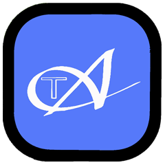
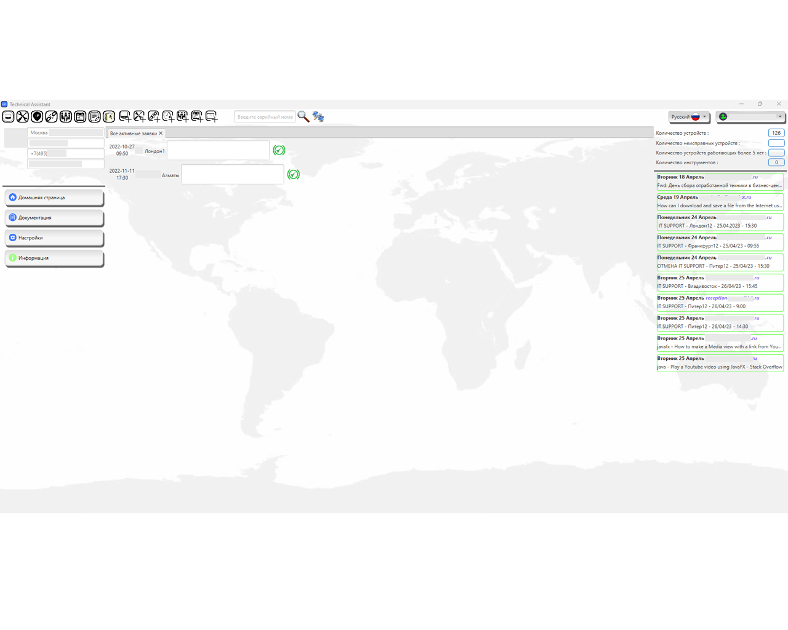
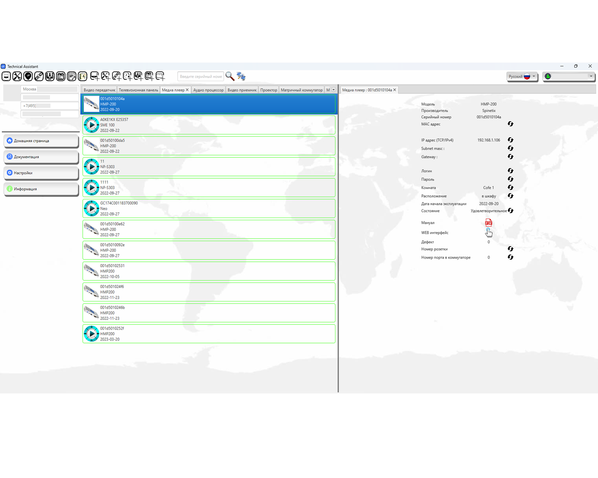
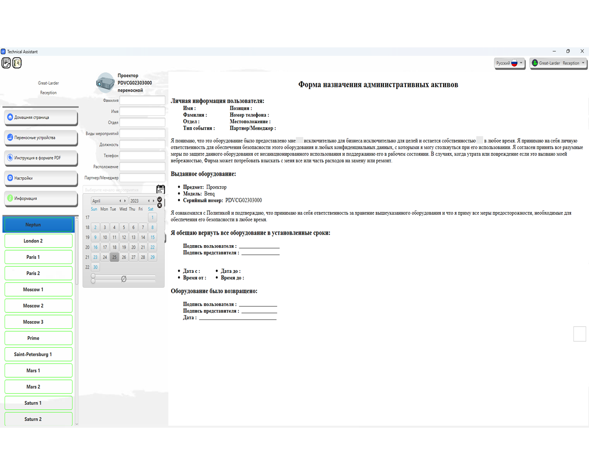
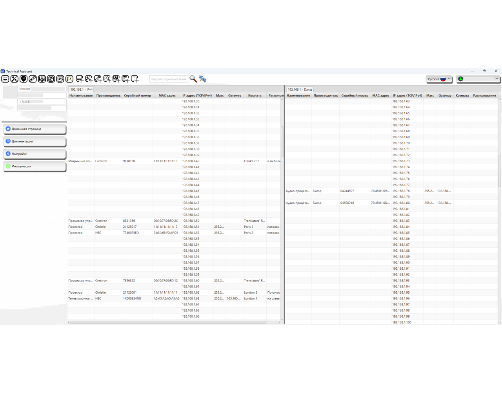
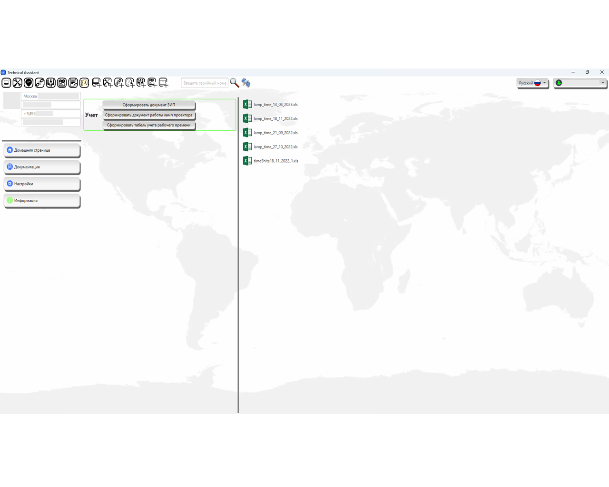

Домашняя
Технический ассистент
Викторинка
О нас
Technical Assistant

Система учета оборудования. Предназначеная упростить обслуживание, инсталяцию и учет оборудования компании.
Начните использовать.
Желаете присоединиться ?
Для установки понадобится JDK 18 +. Воспользуйтесь ссылкой
Java SE Development Kit 18
Соберите все данные в одном месте. Получайте письма определенного содержания и сохраняйте их как заявки. Контролируйте колличество оборудования в определенной компании или своей собственной. Храните данные о инструменте, оборудовании и ведите учет.


Данные об оборудовании всегда под рукой. Вносите правки и данные никогда не потеряются. Они всегда под рукой.
Ускорьте процесс выдачи оборудования для персонала, клиентов. Заполните форму которая автоматически отправляется по почте И отсылается на печать.


Теперь Вы не запутаетесь в огромном множестве адресов. И Ваша сеть всегда будет работать продуктивно и без сбоев. Приложение поддерживает внесение и отображение нескольких сетей.
Формируйте отчетные документы когда это стало необходимо.
